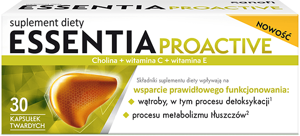
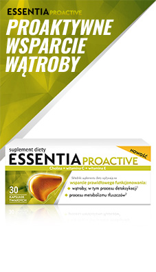
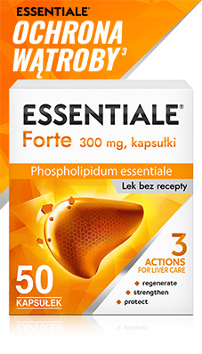
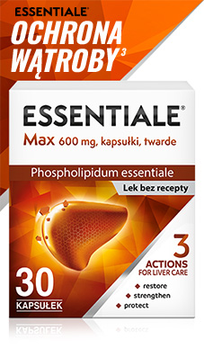

żyj
młodziej,
dłużej

Zachowaj zdrową wątrobę na dłużej
Twoja wątroba odpowiada m.in za procesy energetyczne i sprawia,
że czujesz się
w pełni sił. Essentia proactive wspiera
prawidłowe funkcjonowanie wątroby.
Wspomaga detoksykację oraz metabolizm tluszczu
Zdrowa wątroba radzi sobie
z metabolizmem tłuszczu
i usuwaniem
toksyn z organizmu. Wspomagaj ją codziennie suplementując Essentiale
Proactive.
Unikalny skład(2)
Cholina zawarta w suplemencie diety pomaga w utrzymaniu prawidłowego funkcjonowania wątroby, w tym procesu detoksykacji oraz wspiera utrzymanie prawidłowego metabolizmu tłuszczów. Witaminy C i E chronią przed stresem oksydacyjnym.
Ekonomicze opakowanie
Ekonomiczne opakowanie Essentia Proactive zawiera dwutygodniową kurację przy wygodnym dawkowaniu raz dziennie (dwie kapsułki).
Proaktywne wsparcie

Wątroba odgrywa kluczową rolę w utrzymaniu metabolizmu, rozkładaniu i przekształcaniu niektórych substancji, jak na przykład glikogenu w glukozę. Jedną z jej głównych funkcji jest także usuwanie toksyn z organizmu.
Utrzymuj właściwą masę ciała
Nadwaga lub otyłość mogą obciążać wątrobę, prowadząc do stłuszczenia wątroby. Aby tego uniknąć, utrzymuj właściwą masę ciała.
Poznaj produkty z rodziny Essentiale
|

Essentia Proactive |

Essentiale Forte |

Essentiale Max |
||
|---|---|---|---|---|
| Rodzaj produktu | Suplement diety | Lek bez recepty | Lek bez recepty | |
| Format produktu | Kapsułki twarde | Kapsułki twarde | Kapsułki twarde | |
| Obszar działania | Wspiera wątrobę i zapewnia energię, by zachować młodość na dłużej | Na utratę apetytu i uczucie ucisku w brzuchu spowodowane nieprawidłową dietą i stylem życia | W przypadku objawów choroby wątroby, takich jak ucisk w nadbrzuszu i utrata apetytu, spowodowane niewłaściwą dietą lub zapaleniem wątroby | |
| Składniki | Cholina, witamina C, witamina E | 300 mg substancji czynnej – fosfolipidów niezbędnych (EPL) | 600 mg substancji czynnej – fosfolipidów niezbędnych (EPL) | |
| Ilość | 30 kapsułek | 50 kapsułek | 30 kapsułek | |
| Sprawdź | Sprawdź | Sprawdź |
Dawkowanie
Rozwiń ↓
Zalecana dawka dzienna dla dorosłych to 2 kapsułki raz dziennie. Opakowanie wystarcza na 2-tygodniową kurację.
2 kapsułki
dziennie
opakowanie
na 2 tyg.
Unikalny skład(2)
Rozwiń ↓
Wegański
Bez glutenu
Bez laktozy
170 mg choliny
24 mg Witaminy C
3,6 mg Witaminy E
Wegański
Bez glutenu
Bez laktozy
170 mg choliny
24 mg Witaminy C
3,6 mg Witaminy E
ESSENTIA PROACTIVE, suplement diety, kapsułki twarde. Zawartość składników aktywnych w zalecanej porcji dziennej (2 kapsułki) : 170 mg choliny; 24 mg witaminy C – 30% RWS; 3,6 mg witaminy E – 30% RWS. [RWS – referencyjna wartość spożycia]. Zalecane spożycie: Dorośli - 2 kapsułki dziennie. Cholina wpływa na wsparcie prawidłowego funkcjonowania wątroby. Suplement diety nie może być stosowany jako substytut (zamiennik) zróżnicowanej diety. Prowadzenie zdrowego trybu życia i stosowanie zrównoważonej diety są niezbędne dla zachowania dobrego stanu zdrowia. Kobiety w ciąży, karmiące oraz osoby pozostające pod opieką medyczną nie powinny spożywać tego suplementu diety bez konsultacji z lekarzem. Produkt nie może być stosowany przez osoby uczulone na którykolwiek ze składników preparatu.
Podmiot wprowadzający do obrotu: Opella Healthcare Poland Sp. z o.o.
Przypisy
- 1. Z rodziny Essentiale. Źródło: Globalna bazy danych CHC Nicholas Hall, DB6, 2021, z wyłączeniem tradycyjnych leków chińskich (TCM).
- 2. Wśród produktów w kapsułkach, których głównym składnikiem jest cholina i sprzedażą >1000szt rocznie. IQVIA – ePharmacy Tracker, MAT11/22 OTC 03B1.
- 3. Swain MG. Fatigue in liver disease: pathophysiology and clinical management. Can J Gasroenterol. 2006; 20(3): 181-188.
MAT-PL-XXXX-03.2023